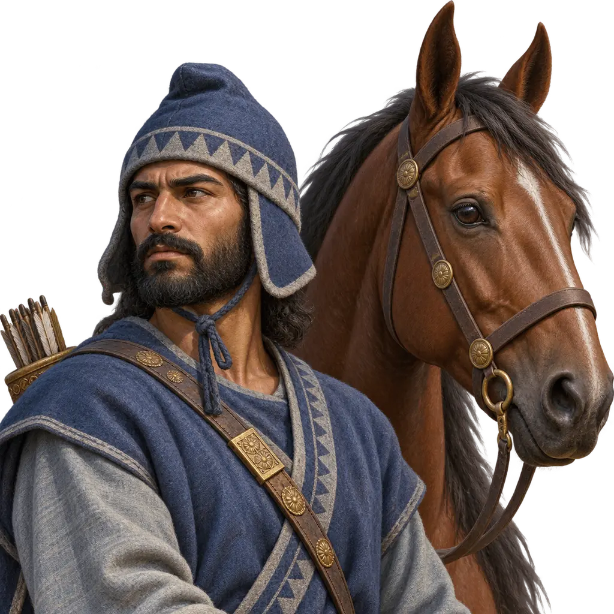
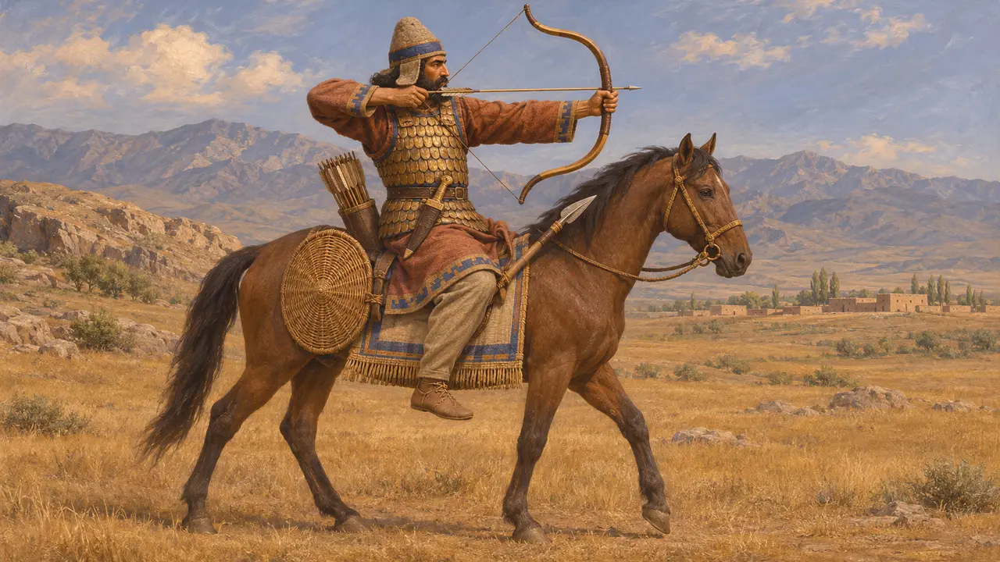
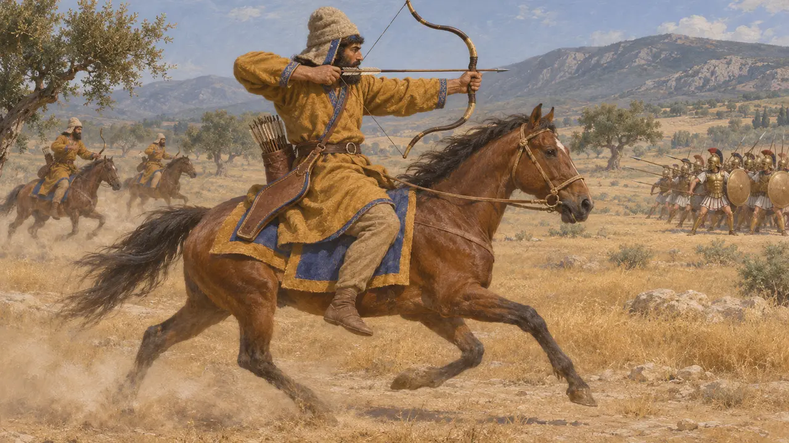
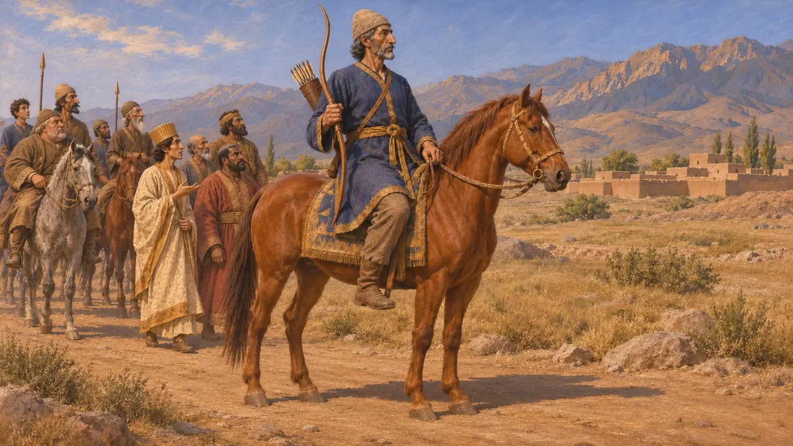
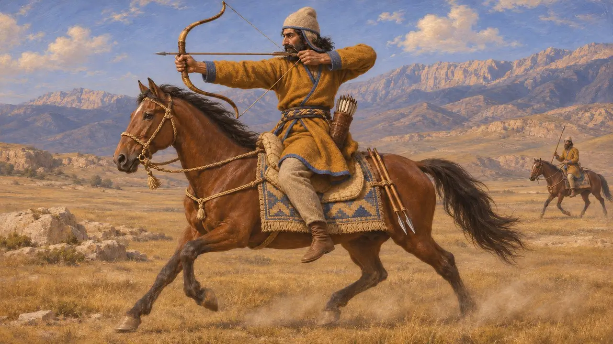

Arciere a cavallo medo
Arciere a cavallo della Media nell'esercito achemenide, circa 550-479 a.C.
Nel gioco: Livello 4: La Terrazza
I Medi dell'altopiano iranico occidentale erano i parenti più stretti dei Persiani e la loro prima grande conquista sotto Ciro. I loro cavalieri, cresciuti nell'arte di cavalcare e tirare con l'arco, servivano nella cavalleria del Re. Gli scrittori greci descrivono i cavalieri del Re che tormentavano la fanteria con le frecce, e le fonti persiane mostrano Medi che combattevano e comandavano per il Re al fianco degli stessi Persiani.
Nel gioco: Il gioco mostra un cavaliere che tira dalla sella, supera in velocità la fanteria e soccombe agli altri cavalieri. Erodoto dice che la cavalleria meda portava lo stesso equipaggiamento della fanteria, lancia e scudo oltre all'arco, quindi il puro schermagliatore è una semplificazione.

I Medi nell'esercito del Re
Racconto anticoErodoto descrive la fanteria meda nell'esercito di Serse del 480 a.C. vestita come i Persiani, con berretti di feltro, tuniche con maniche, corazze a scaglie e brache, scudi di vimini, lance corte, grandi archi e frecce di canna. Aggiunge che questa foggia era in realtà meda e che i Persiani l'avevano adottata. Afferma che la cavalleria meda era equipaggiata come la fanteria, sicché un cavaliere medo portava lancia, scudo e pugnale oltre all'arco.
Herodotus 7.61-62; Herodotus 7.86

Cavalieri che tiravano dalla sella
Racconto anticoErodoto racconta che ai ragazzi persiani si insegnava a cavalcare, a tirare con l'arco e a dire la verità. A Platea, nel 479 a.C., descrive la cavalleria del Re al comando del persiano Masistio che attaccava la fanteria greca squadrone dopo squadrone, finché Masistio cadde dopo che il suo cavallo era stato colpito da una freccia. In seguito, dice, i cavalieri tormentarono i Greci con giavellotti e frecce, da arcieri a cavallo difficili da raggiungere. In questi passi non distingue in particolare i Medi.
Herodotus 1.136; Herodotus 9.20-22; Herodotus 9.49

I Medi nelle fonti persiane
Nelle fontiL'iscrizione di Behistun di Dario registra una rivolta meda guidata da Fravartish nel 522-521 a.C., schiacciata da Dario e dai suoi generali; Fravartish fu impalato a Ecbatana. L'iscrizione nomina anche un medo, Takhmaspada, come comandante di un esercito persiano e medo inviato in Sagarzia. Nei rilievi della scalinata dell'Apadana a Persepoli, uomini con copricapi arrotondati e abiti da cavaliere, di solito identificati come Medi, si alternano a Persiani in lunghe vesti.
DB §§24-33; Persepolis Apadana reliefs

Come combatteva davvero la cavalleria
ContesoGli storici discutono fino a che punto i cavalieri achemenidi fossero arcieri a cavallo alla maniera delle steppe di epoca successiva. Erodoto menziona giavellotti accanto agli archi, e Senofonte, che scrive più tardi, attribuisce giavellotti ai cavalieri persiani, per cui molti ritengono che usassero entrambi. Erodoto racconta anche di Sciti che insegnavano il tiro con l'arco a giovani medi sotto Ciassare, episodio che alcuni leggono come segno di un'influenza delle steppe. Non si sa se i Medi formassero reparti distinti di arcieri a cavallo.
Herodotus 1.73; Herodotus 9.49; Xenophon, Cyropaedia; C. Tuplin, 'All the King's Horse', 2010
Fonti
- Herodotus, Histories 7.61-62, 7.84-86
- Herodotus, Histories 1.73, 1.136, 9.20-22, 9.49
- Darius I, Behistun inscription (DB §§24-33)
- E. Schmidt, Persepolis I, 1953
- C. Tuplin, 'All the King's Horse', 2010
- P. Briant, From Cyrus to Alexander, 2002